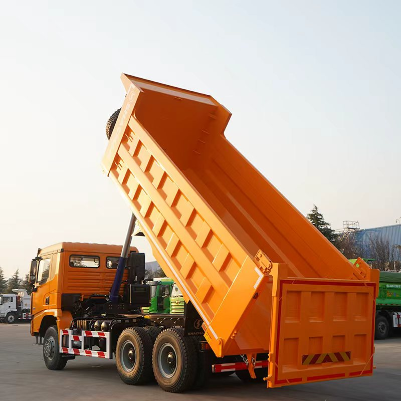
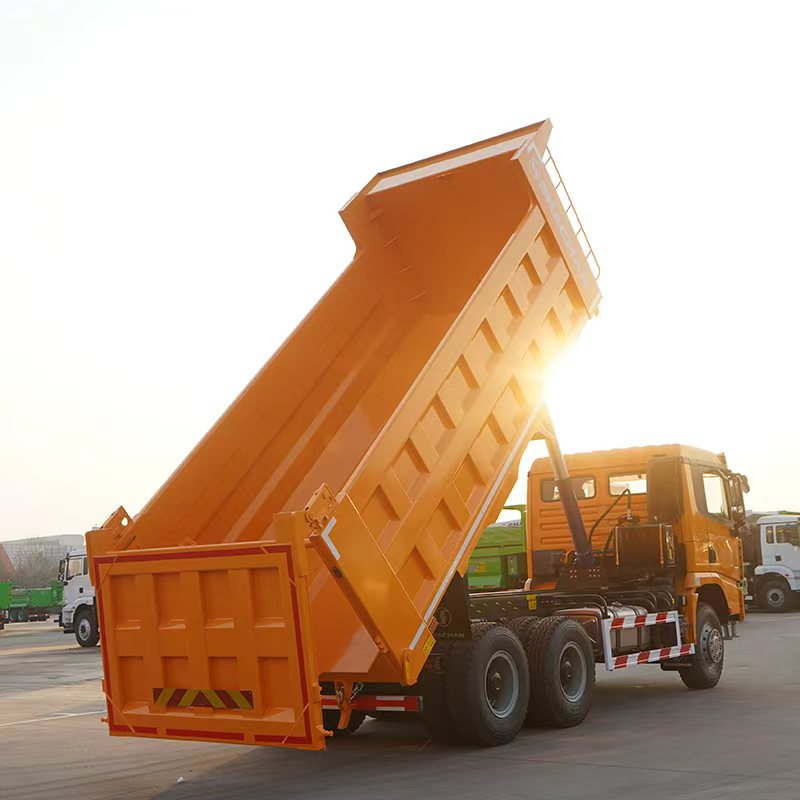

Direct answer: The documented X3000 6x4 reference configuration uses a 430 HP Weichai WP12.430E201 Euro III engine and a FAST transmission. It can be evaluated for construction and material haulage in Tajikistan, but altitude, gradients, winter temperature, legal axle loads and the exact route must be confirmed before an order.
Verified reference configuration
The available document identifies left-hand drive, 6x4 drive, Weichai WP12.430E201, 430 HP, 11.596 L displacement, Euro III and a FAST transmission. These are reference specifications. Axle ratio, tyres, body, fuel tank, dimensions and weights must be confirmed in the final country-specific offer.
Mountain-route inputs
Provide the maximum operating altitude, longest sustained gradient, loaded gross weight, expected climbing speed and distance per shift. Cold-start temperature and road surface are also important for a Tajikistan configuration.
Body selection
A body should be selected around the material—not around a generic volume target. State whether the truck will carry rock, ore, sand, gravel or soil, together with density and loading equipment. Wear and impact conditions affect the recommended body structure.
What a useful quotation includes
A reliable request names the destination, quantity, jobsite, payload target, daily distance, road ratio, gradients, climate, emission requirement and optional equipment. This is more useful than asking for a price based on the model name alone.
Real vehicle views: body, rear gate and lifting system




- destination country, port and quantity;
- cargo, density and target legal payload;
- road surface, daily distance and maximum grade;
- steering, emissions, registration and other local requirements;
- required delivery term and optional equipment.
Frequently asked questions
Which engine is verified?
Weichai WP12.430E201, 430 HP, 11.596 L and Euro III in the reference document.
Is every X3000 built to this specification?
No. Specifications vary by destination and order.
Can it work at high altitude?
It must be evaluated against the real altitude, load and route.
Is the online specification a final offer?
No. Final configuration, price and delivery are confirmed in writing.
Continue your research with the related model or buyer resource, review more truck buying guides, or send the project details below. Related model or buyer resource · More guides.
Compare SHACMAN dump trucks for sale, 6x4 and 8x4 options and send your route and material requirements for a configuration-based quotation.
Request a destination-specific truck proposal
We will confirm the applicable configuration, commercial terms and shipment plan for your project.